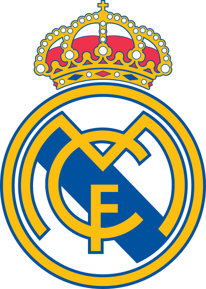
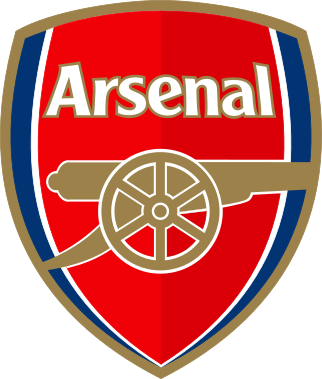
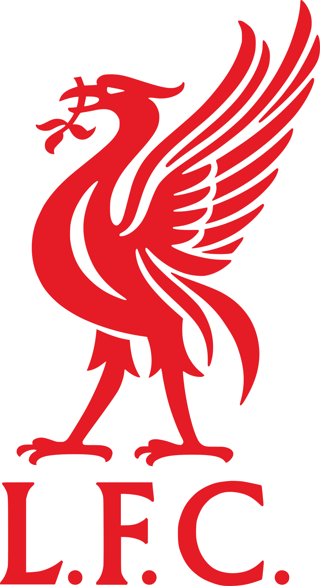

S4B
Statistics 4 Bets
Análisis estadístico de fútbol
Estadísticas de fútbol para entender cada partido
LaLiga · LaLiga Hypermotion · Ligue 1 · Premier League
Análisis estadístico de fútbol
LaLiga · LaLiga Hypermotion · Ligue 1 · Premier League


